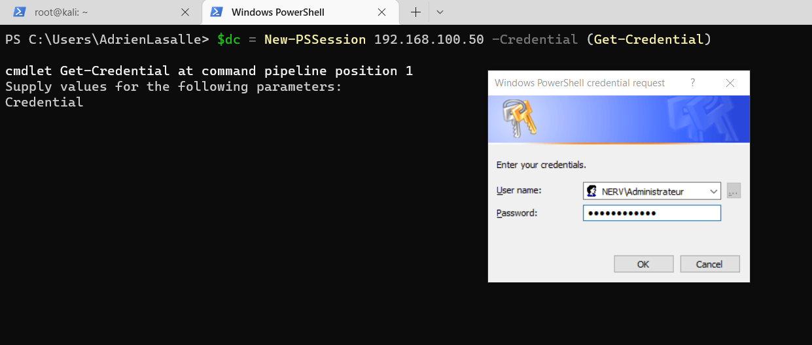
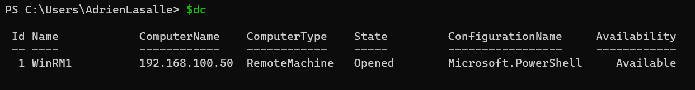
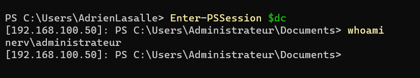

Adrien
Friday, August 19, 2022
#1 Setup the Domain and Workstations
Disclaimer: I’m following the amazing series of video from John Hammond! I’ll edit as much as possible the code and not try to copy paste John’s work 😊
Leave a ⭐ and follow !
Prerequisite
Here is the list of stuff you’ll need to build this training lab on your own:
- Good PC (At least 16GB of RAM and 500GB SSD)
- ISO files for Windows 11 and Windows Server 2022
- VMWare workstation
Network Schema
Domain Controller:
- Windows Server 2022 CORE (no GUI)
- DC01.NERV.COM / Main DC and Main DNS
- 192.168.100.50 (Static IP)
Workstation:
- Windows 11
- WS01.NERVE.COM
- 192.168.100.0/24
Management:
- Not In the Domain
- 192.168.100.0/24
- 192.168.2.0/24 (My own network)
Template VM and cloning
First thing to do is building your template VM using VMWare so you’ll be able to clone and create machines as you wich and skipping the install part.
To do so, I would recommand you to install first a Windows Server 2022 till the configuration of the Administrator password
Setup PSSessions
From the management Computer, we are going to use PSSESSION to manage remotely the DC. First you need to add the DC ip in the trusted hosts list:
Start-Service WinRM
Set-Item WSMan:localhost\client\trustedhosts -Value 192.168.100.50
Next, start a new session using:
New-PSSession -ComputerName 192.168.100.50 -Credential (Get-Credential)
Enter-PSSession <ID>
Add the ID of the PSSession.
Or you can save the Session using this command:
 _  _ 
Install the DC
If youre are not in configuration mode, just use it:
sconfig
<6> Update Server
<13> Reboot
Install VM Tools
Use VMWare to install the vmware tools and go in the disk
cd D:\
./setup64.exe
Then don’t forget to change the DC name, here DC01:
<2> Change Computer Name
Set-SConfig -AutoLaunch $false
Configure Network Interfaces
It is very important to setup a static IP for your Domain Controller since it will be used as a default DNS server for your Domain:
<8> Change Network
<Select Network Interface 1 - 192.168.100.0>
<Change Address STATIC>
<192.168.100.50/255.255.255.0/GW:192.168.100.2>
Then change the DNS server to the domain controller IP:
<8> Change Network
<Change Default DNS Address>
<192.168.100.50>
Install Forest
Once the Server is setup with basic information, do not hesitate to take a snapshot before installing the features.
Get-WindowsFeature | ? {$_.Name -LIKE "ad*"}
Install-WindowsFeature AD-Domain-Services -IncludeManagementTools
Create your forest
Import-Module ADDSDeployment
Install-ADDSForest
Press Y then the forest name, here nerv.com and then the same password as the current Adminitrator. Press Y Again.
Once the server reboot, you need to change the DNS and add the IP of the DC (Like we did before but since we install the domain, the DNS was changed).
Remove Password Complexity
It is usefull to remove the password complexity here since we are going to create weak username and password.
secedit /export /cfg c:\secpol.cfg
(gc C:\secpol.cfg).replace("PasswordComplexity = 1", "PasswordComplexity = 0") | Out-File C:\secpol.cfg
secedit /configure /db c:\windows\security\local.sdb /cfg c:\secpol.cfg /areas SECURITYPOLICY
rm -force c:\secpol.cfg -confirm:$false
WorkStation Setup
First install a local Windows 10 or 11 and create a local administrator.
Once installed, take a snapshot before putting the client into the domaine, that way you’ll be able to clone the machine for other workstations. Do not forget to change the name of the machine : WS01
Link the Workstation
Before using the “Access Work or School” feature form the the WorkStation, you need to change the DNS address to you Domain Controller.
Get-DnsClientServerAddress
Set-DnsClientServerAddress -InterfaceIndex 3 -ServerAddresses 192.168.100.50
Once it is done, you just need to search “Access Work or Schooll” feature on task bar and then use the domain name as local domain.
Or you can use this command :
Add-Computer -DomainName nerv.com -Credential nerv\Administrateur -Force -Restart
Take a snapshot of the DC01 and the WS01 once it is joined BEFORE adding the random users so you can go back anytime you want.